Stepping out of school and into the real world can be both exciting and overwhelming. One of the most important decisions students make after 12th standard is choosing the right course and career path. Also, getting ready for tough entrance exams like CUET, JEE, NEET, or CLAT is a major deal for a student. But with so many entrance exams and institutes across India and even locally in cities like Siliguri, it’s easy to feel confused and lost.
This blog is your complete guide to what comes next. We’ve broken it down stream-wise to help you understand: Which entrance exams are relevant to your field and the institutes you can join for their coaching.
So, let’s explore the major entrance exams after 12th and the coaching centers in Siliguri that can help you prepare.
Science Stream: Entrance Exams After Class 12
If you’re a science student, here are the main exams you can prepare for:
- NEET (UG) – For MBBS, BDS, and other medical courses
- JEE (Main & Advanced) – For engineering (IITs, NITs, private colleges)
- CUET (UG) – For BSc, Biotechnology, and other science subjects in top universities
- NDA – For defence entry through UPSC
Commerce Stream: Entrance Exams After Class 12
Commerce students have a variety of professional exam options:
- CUET – For BCom, Economics, and other commerce-related degrees
- CLAT – For those interested in law
- IPMAT – For admission to Integrated MBA programs at IIMs
Arts Stream: Exams After Class 12
Arts students have several competitive options:
- CUET – For BA, Journalism, etc.
- CLAT – For law aspirants
- NIFT Entrance– For students interested in pursuing fashion design
Aakash Institute
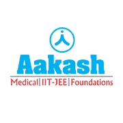
Aakash Institute has earned a solid reputation in Siliguri and across India for its consistent NEET and JEE results. With experienced faculty and well-structured study modules, students here benefit from regular tests, doubt-clearing sessions, and a disciplined classroom environment. Many aspirants choose Aakash for its pan-India presence and trusted brand value. The centre also offers integrated test series that simulate the real exam environment well, making it one of the best institute for NEET in Siliguri.
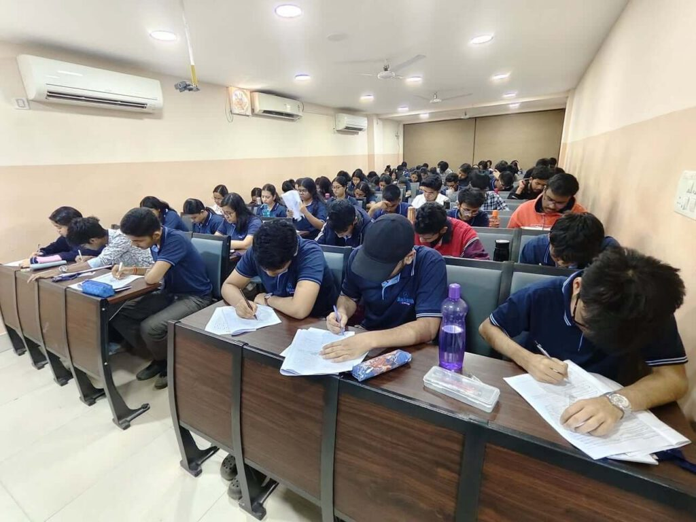
Exams covered: NEET, JEE (Main & Advanced)
Website: https://www.aakash.ac.in/siliguri-city
Contact: 08800013151
Email: corporate@aesl.in
Address: 3rd & 4th Floor, Shanti Tower, 2nd Mile, Sevoke Rd, above Citi Style, Ward 43, Dasrath Pally, Bhanu Nagar, Siliguri
Allen Career Institute
Allen is known for its focused and rigorous training programs, especially for NEET aspirants. What sets it apart is its strong mentoring system and extensive classroom practice. The faculty takes a concept-based approach, making difficult topics easier for students to grasp. Many parents in Siliguri trust Allen for their children’s science entrance preparation due to its national-level framework.
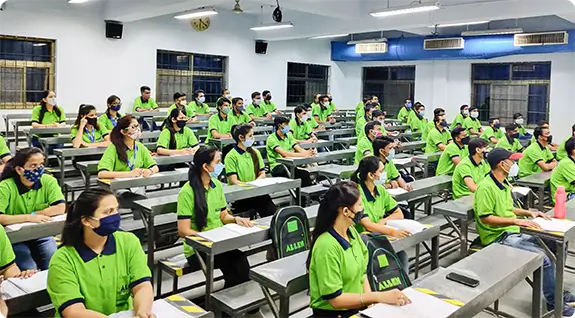
Exams covered: NEET, JEE
Website: https://www.allen.ac.in/siliguri
Contact: 09513784242
Email: siliguri@allen.in
Address: 4th Floor, Tradium Complex, Checkpost, Sevoke Rd, Siliguri
Physics Wallah (PW) Vidyapeeth
PW Vidyapeeth offers an affordable yet competitive classroom coaching experience for JEE and NEET. Known for its tech-driven teaching model, it combines digital learning with in-person mentoring. Students benefit from doubt-solving, weekly tests, and revision-oriented sessions. In a short time, it has become a go-to option for those looking for budget-friendly quality coaching in Siliguri. They also offer residential JEE/NEET coaching in Siliguri.
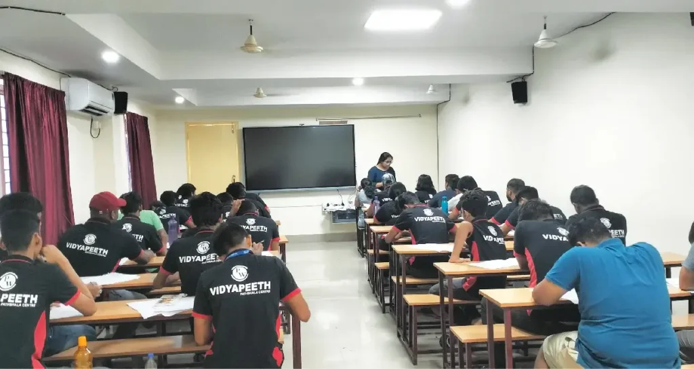
Exams covered: JEE (Main & Advanced), NEET
Website: https://www.pw.live/offline-centres/batches/vidyapeeth/siliguri-wb
Contact: 08045682078
Address: Sky Star Building, Panitanki More, 3rd, 4th & 5th Floor, Sky Star Building, Sevoke Rd, Siliguri
Career Launcher
Career Launcher stands out in Siliguri for aspirants preparing for CLAT, CUET, and IPMAT. The institute’s structured approach, mock tests, and personalized mentoring help students gain confidence. They focus on concept clarity and test strategies, especially helpful for students transitioning from school to competitive entrance formats. The centre often holds workshops and one-on-one doubt sessions for better support.

Exams covered: CUET (Commerce), CLAT, IPMAT
Website: https://www.careerlauncher.com/siliguri/
Contact: 08373054201
Email: siliguri.cl@careerlauncher.com
Address: 18, Haren Mukherjee Rd, beside GTS Club, near bhutia market, Ward 16, Hakim Para, Siliguri
IMS Siliguri
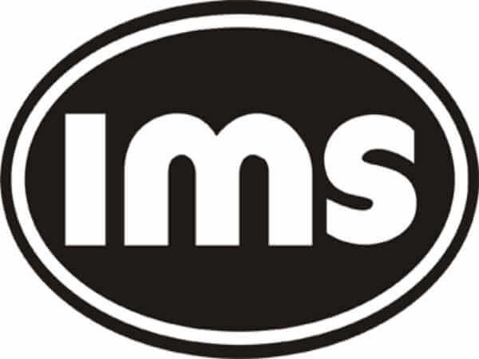
IMS is well-regarded for its aptitude training and exam strategies for CLAT, IPMAT, and CUET. With highly qualified mentors and regular analysis sessions, students here learn how to approach exams smartly. The institute emphasizes logical reasoning, general awareness, and comprehension, all essential for success in law and management entrance exams.
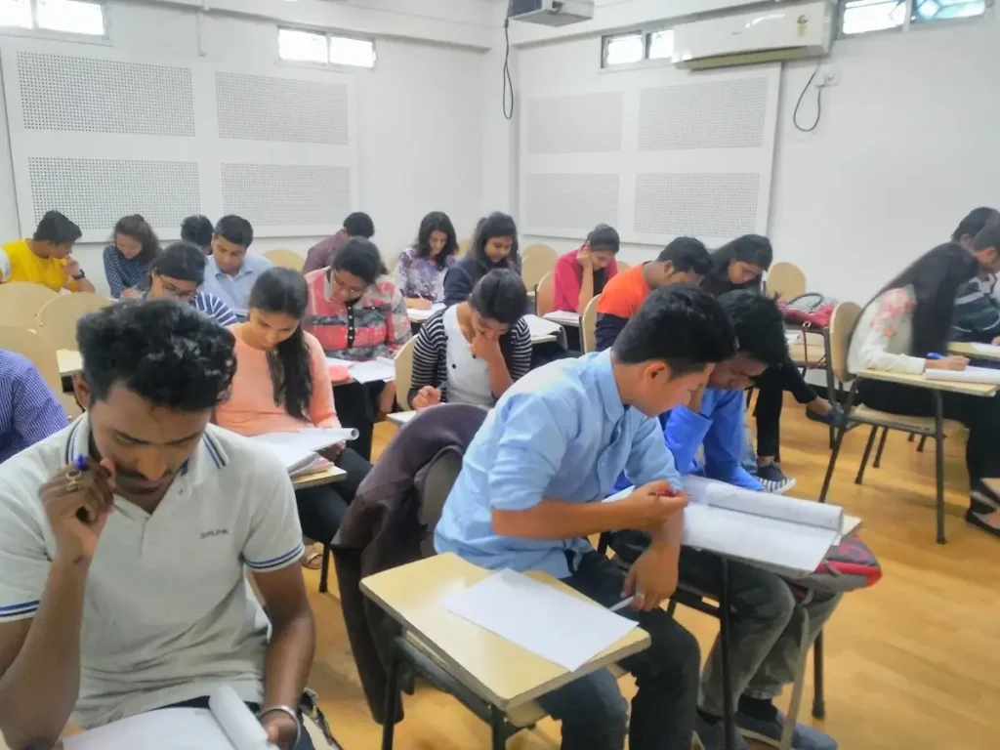
Exams covered: CLAT, IPMAT, CUET, NMAT/NPAT
Website: https://imsindia.com/center/siliguri/
Contact: 09832697217
Email: silliguri@imsindia.com
Address: 1st Floor, Electric Office, Majumdar Building, Station Feeder Rd, opposite Milan pally, Siliguri
Garg’s Scholars’ Institute
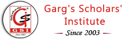
Garg Institute is a trusted name among humanities and arts stream students preparing for entrance exams in fields like mass communication, design, and social sciences. Their small batch sizes and mentor-driven approach make the learning environment more personal and focused. They help students prepare for CUET with a detailed focus on subject-specific learning.
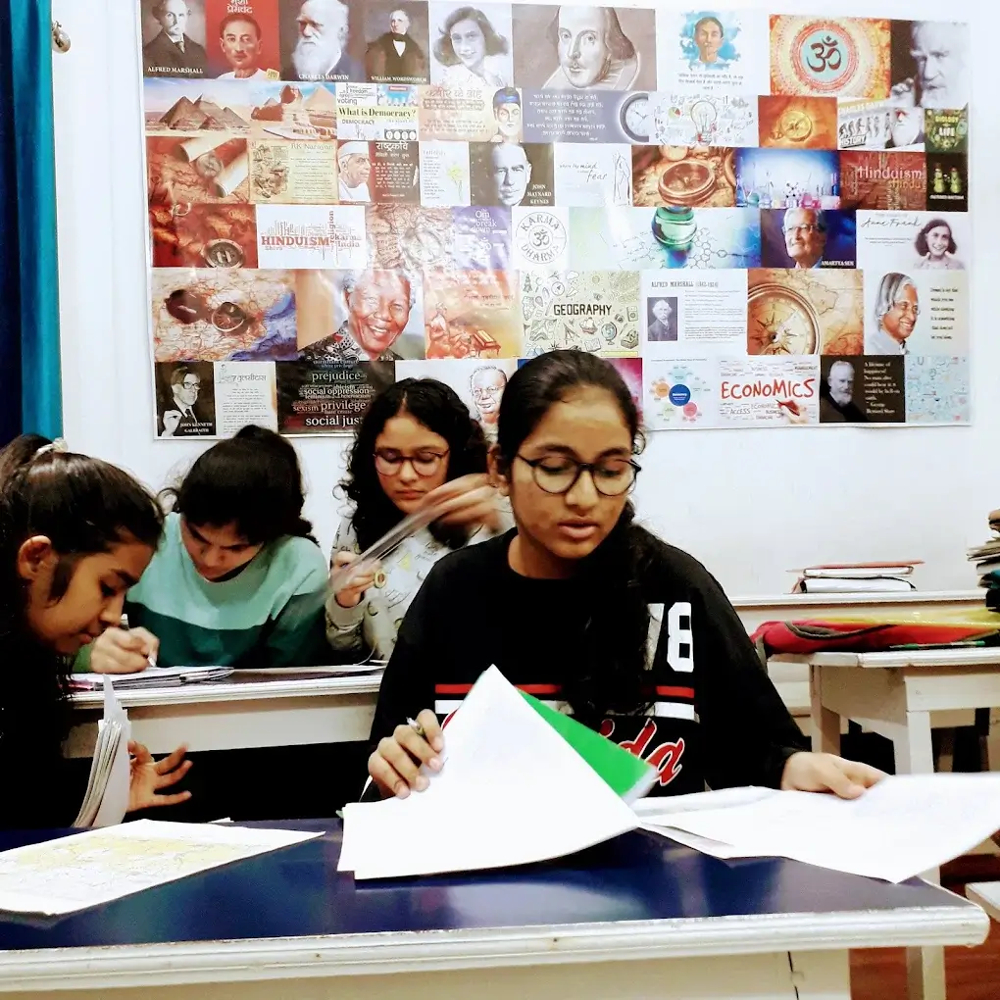
Exams covered: CUET, CLAT
Website: https://gsislg.com/
Contact: 09832062876
Email: info@gsislg.in
Address: Singh Mansion, Sevoke Rd, near Shiv Mandir, Punjabi Para, Siliguri
BRDS (Bhanwar Rathore Design Studio) Siliguri
BRDS caters to the students aiming for NID, NIFT, UCEED, and similar design school entrances. It provides both foundational design learning and exam-specific coaching. With sketching classes, portfolio development, and entrance test simulations, students get hands-on exposure. BRDS is a preferred choice for Siliguri’s fashion design aspirants looking to take admission in top institutes.
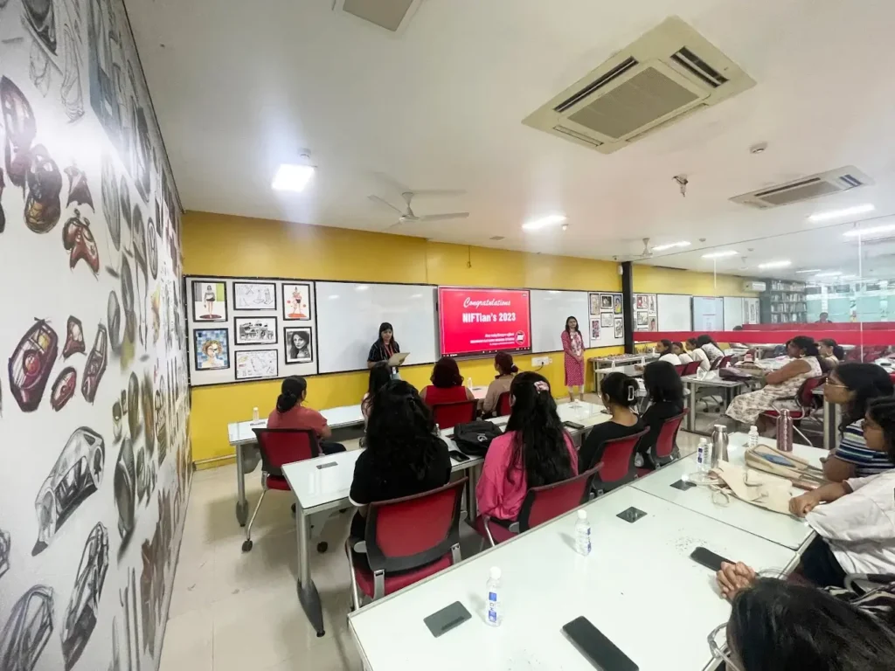
Exams covered: NIFT, UCEED, CEED
Website: https://rathoredesign.com/brds-in-siliguri/
Contact: 07567857598
Address: Sambhu Charan Villa, Mitra Cafe Building, Nazrul Sarani, opposite Sunhill Portico Hotel, Ward 14, Hakim Para, Siliguri
SIL Institute, Siliguri
SIL Institute offers entrance coaching in Especially popular for CUET and undergraduate entrance prep in international relations and liberal arts, the institute focuses on reading comprehension, analytical writing, and subject-oriented guidance. It caters well to students inclined towards interdisciplinary and global studies.
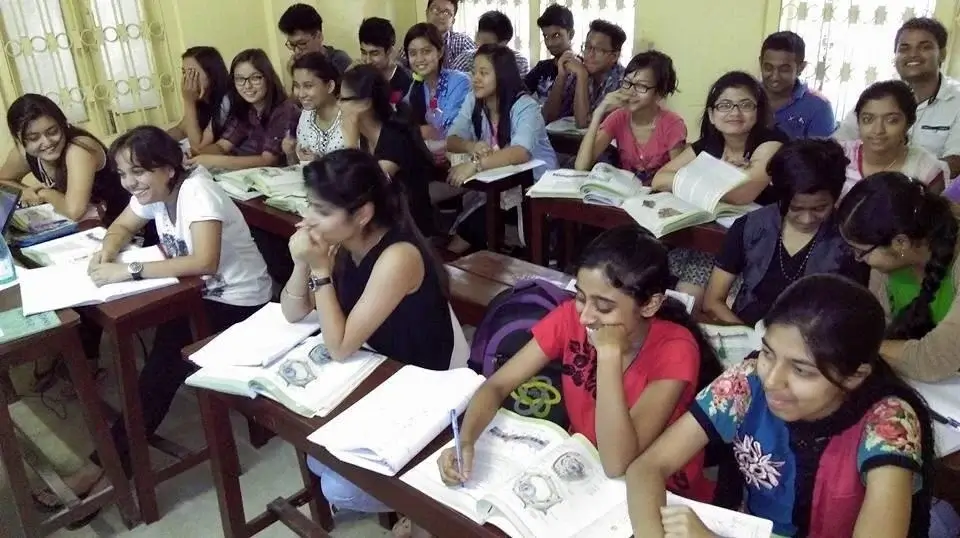
Exams covered: CUET
Website: https://www.silinstitute.com/
Contact: 9476383441
Mail: silinstitute17@gmail.com
Address:
First Branch: Swarg Building, Lassi Ghar by Lane,
Pradhan Nagar Road, Siliguri
Second Branch: Nazrul Sarani Road, Near Maya Sanyal Nursing Home, Ashrampara
Study Xpress
Study Xpress is also one such reputed coaching institute based in Siliguri providing high-level expert coaching for a host of government and competitive examinations. The institute also offers free demo class with experienced teachers with subject matter expertise and has the additional advantages of offline as well as online classes, study material upgraded periodically, test series, and revision classes to help all the students, interested to clear NDA exams, excel in their course.
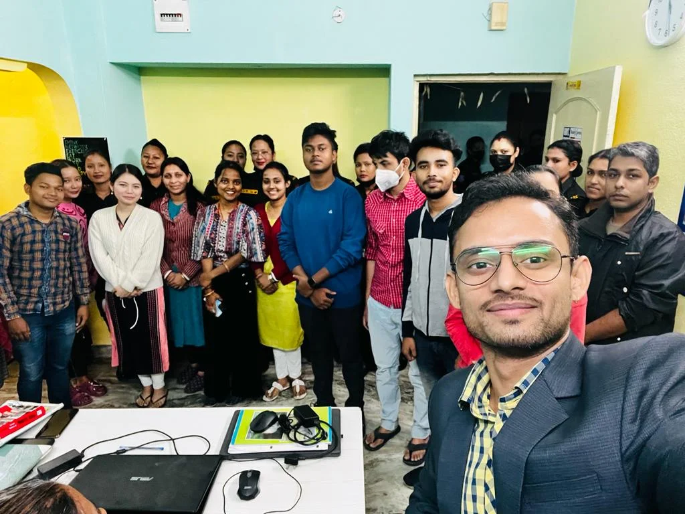
Exams Covered: UPSC NDA
Website: www.studyxpress.co.in
Contact: 8961189005
Address: Gate No. 2, 5, Baghajatin Road By Lane, Opposite Siliguri College Road, College Para, Siliguri
Bibaswan Educational Foundation
Founded in 2015, Bibaswan Educational Foundation is a renowned coaching center in Siliguri that provides intensive preparation for different central and state-level competitive exams. It offers both online and offline classes along with doubt-clearing and preparation classes with its team of experienced faculty members, personalized coaching, and structured mock test schedules.
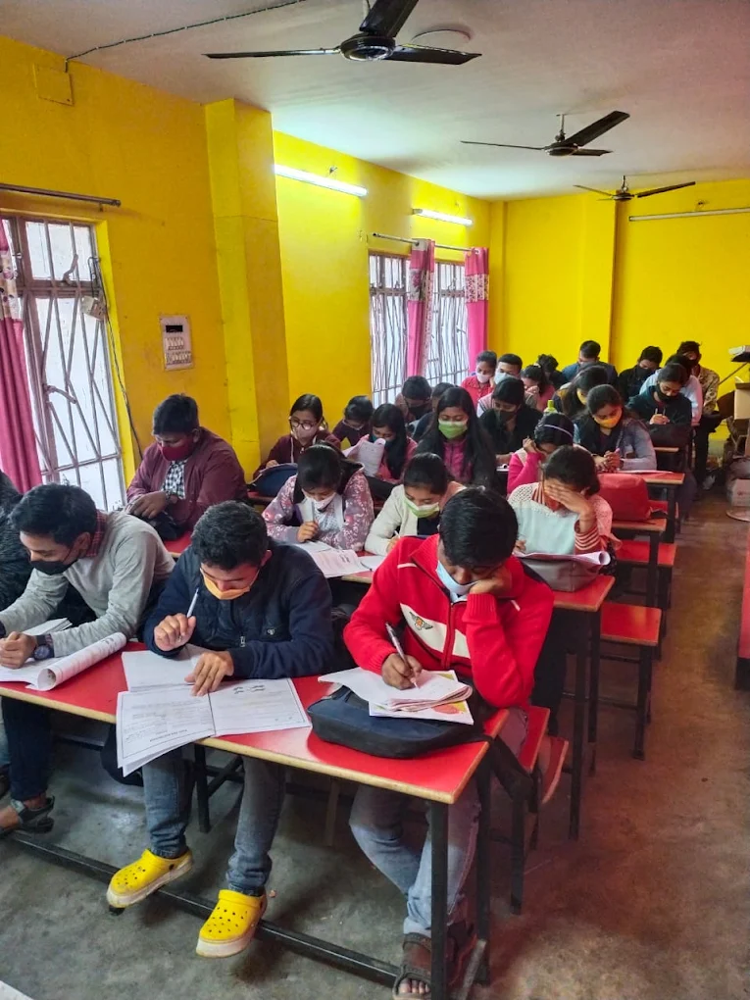
Exams Covered: UPSC NDA
Website: www.bibaswaneducationalfoundation.in
Contact: 9641592339
Address: 37, Nandalal Basu Sarani, College Para, Hakim Para, Siliguri
How to Pick the Best Coaching Institute?
It’s not enough to just pick the most well-known coaching institute. It depends on how you learn best, what you want to study for, and your routine every day. Here are some things to bear in mind:
Experience of the Faculty: Before finalizing any institute, dont’t forget to ask about the faculty, their qualifications and experience.
Study Materials and Mock Tests: Good coaching centers give you new study materials and practice exams on a regular basis. These exams show you where you need to get better and help you do it.
Batch Size: When classes are smaller, students may typically discuss with their teachers more easily. This is important when you need aid with hard subjects.
Mode of Coaching: Decide whether online or offline classroom classes suit you better. Some students do better in offline settings, while others do better with online sessions that offers more flexibility
Demo Classes: Make sure that you ask, whether they provide demo classes so you can see how they teach before you sign up.
Track Record: Request to see the institute’s results from previous years. This will give you an idea of their success rate and how effectively they’ve helped students in the past.
Trying to “figure it out” puts pressure on students. Whether you’re aiming for a seat in an engineering or medical college, or a top central university, here, the right guidance, both academic and mental, makes a big difference. This is why exploring all options is beneficial before making a decision. Undoubtedly coaching will assist you, but it is your discipline, and dedication that helps you the most self-reliance that will pull you through the career.
Wishing you the very best for your exams and beyond.